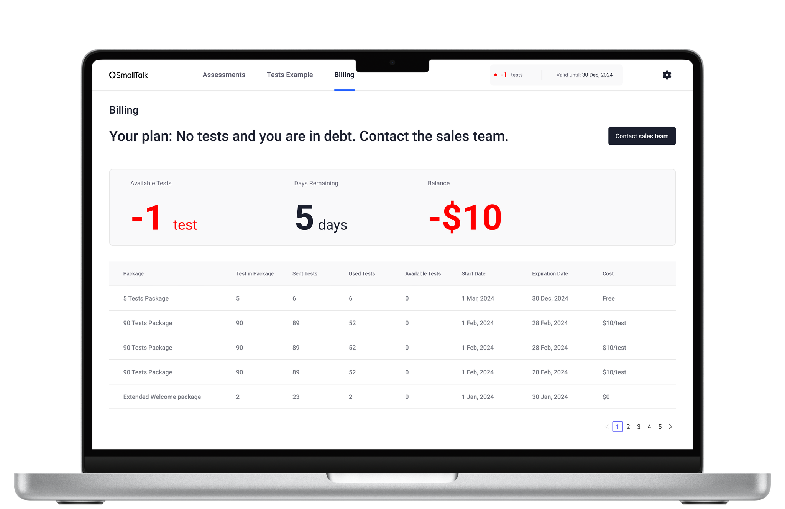
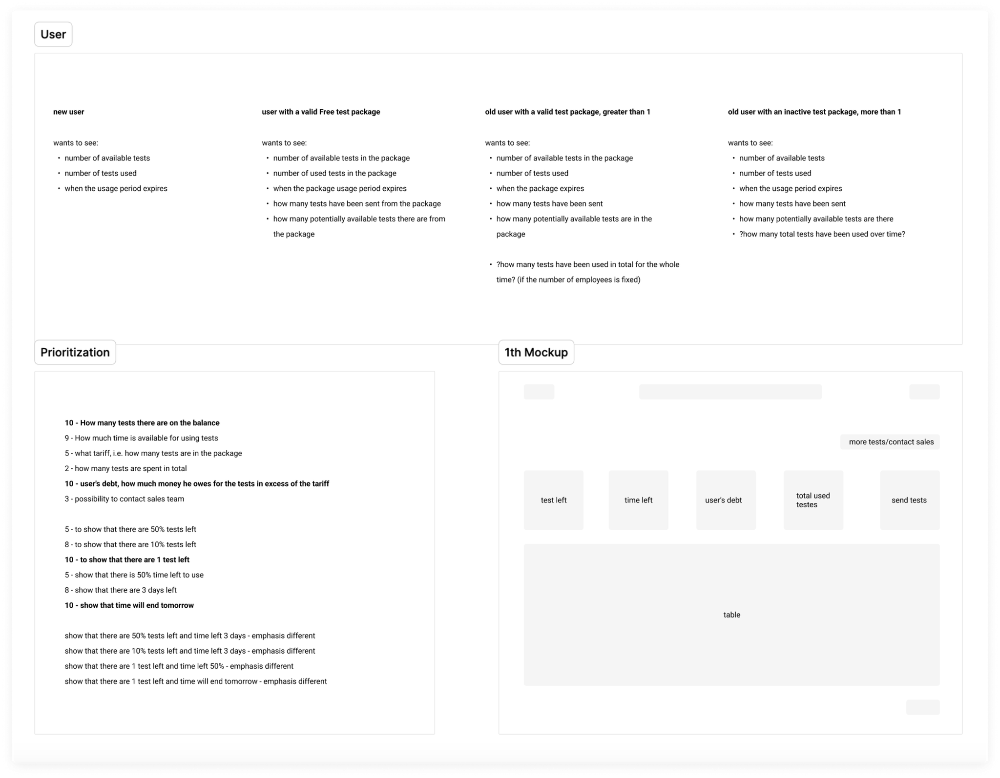
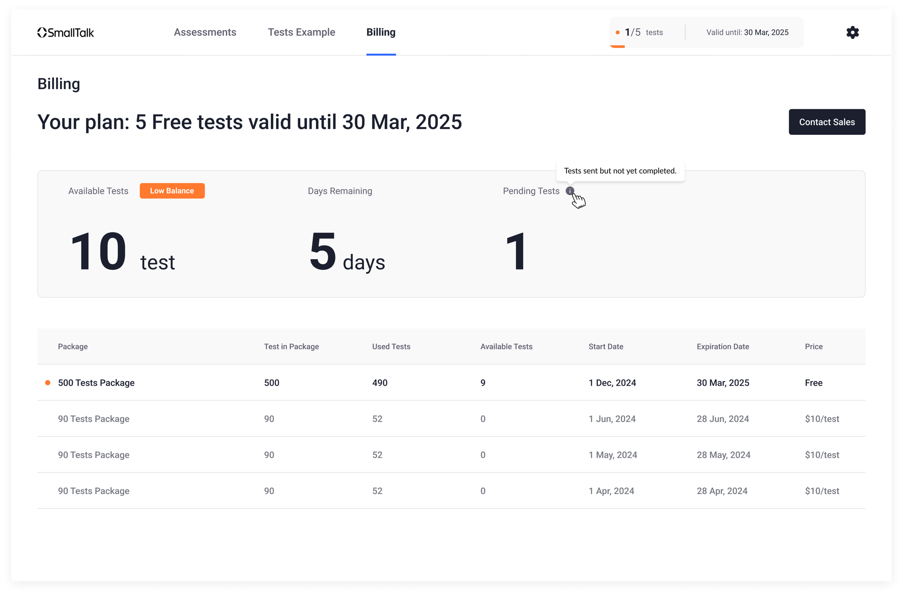

Billing as a product experience, not a back-office screen
SmallTalk2Me is an AI-powered English proficiency tool used by companies to prepare employees for professional communication. B2B clients purchase test packages — sets of English assessments distributed across a team — and manage them through a company dashboard.
The billing section of that dashboard had a problem: it was generating a disproportionate share of support tickets. Clients couldn't understand their current balance, couldn't reconcile past charges, and were regularly confused about when they'd run out of tests. Billing had become a trust issue.

Three questions clients couldn't answer themselves
Through support log analysis and three client interviews, I identified the questions that were generating the most tickets:
- "How many tests do I have left?" — The remaining balance wasn't surfaced at the page level; users had to calculate it from a transaction table.
- "When does my current package expire?" — Usage period information existed but wasn't legible — buried in fine print, formatted as raw timestamps.
- "Why is my balance lower than expected?" — There was no distinction between expected usage and debt from overages. Clients couldn't tell if they were over-spending or if the system had an error.
Competitive analysis, wireframes, and real users
Reviewed billing UX across six B2B SaaS products (Notion, Linear, Intercom, Loom, Figma, Slack). Documented how each handled balance display, usage periods, overage states, and transaction history.
Mapped every data point on the billing page against the three key user questions. Anything that didn't answer one of those questions was either moved to a secondary view or removed.
Built three wireframe concepts with different hierarchy approaches. The selected direction leads with a balance card (current tests remaining, usage period, overage status) before the transaction table.
Tested with two existing B2B clients via Figma prototype. Asked them to answer the three questions using the new interface. Both answered all three correctly within 15 seconds — without guidance.


Three questions, one screen
The redesigned billing page has a clear two-layer structure:
- Balance card (top) — Current test balance displayed as a large number, usage period shown as a human-readable date range, overage highlighted in amber with a clear label when applicable
- Transaction table (below) — Sortable by date, with purchase and deduction rows clearly differentiated by color and icon; running balance shown in a dedicated column
Both sections support real-time updates — the balance card refreshes without a page reload when a new test is assigned. Clients can also download a PDF invoice for any transaction directly from the table row.
Support tickets down, trust up
Post-launch, account managers reported a noticeable drop in billing questions on renewal calls. Clients who previously needed reassurance about their balance were coming to calls already informed. Billing stopped being a friction point and started being a trust signal.